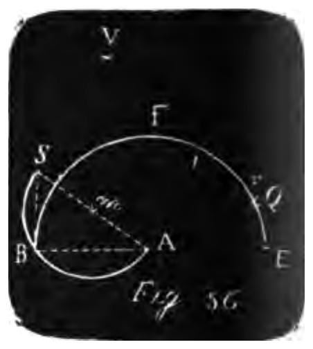

§§ 118–123: Bisezione dell’angolo e linee trigonometriche (Fig. 54–57)¶
118. Prob. Dividere per metà l’angolo \(BAC\) (fig. 54) dato pei tre soli punti \(B, A, C\) nei quali \(A\) è disugualmente lontano da \(B\) e da \(C\).
Sol. Col centro \(A\), raggio \(AB\) sia descritto l’arco \(BMD\). Si faccia a \(CB = CD\). Si divida l’arco \(BMD\) per metà in \(M\) (§ 60). Si divida l’arco \(BM\) per metà in \(N\). Sarà l’angolo \(BAN\) la metà dell’angolo \(BAC\).
Dim. Essendo l’angolo \(BAD\) duplo di \(BAC\) (§ 116) e duplo parimente di \(BAM\) (33, lib. VI); sarà l’angolo \(BAC\) lo stesso che \(BAM\). Ma l’angolo \(BAN\) è la metà di \(BAM\). Dunque ecc.

119. Prob. Dato l’arco \(BC\) (fig. 55) descritto col centro \(A\), trovare il suo seno, il coseno, la tangente e la secante.
Sol. Nella circonferenza descritta col raggio \(AB\) si faccia a \(BC = Bc\). Si divida per metà la \(Cc\) in \(M\) (§ 66). Sarà \(CM\) il seno, \(MA\) il coseno.
Col centro \(M\), raggio \(MA\) si descriva un arco, che tagli, se può, la circonferenza in \(D\) e \(d\). Si determini la semicirconferenza \(dD\delta\) (§ 64). Per lo stesso § si aggiunga alla \(BA\) la sua eguale \(BV\). Coi centri \(A\) e \(V\), e col raggio \(D\delta\) si descrivano due archi, che si taglino in \(S\). Sarà \(BS\) la tangente, \(SA\) la secante.
Dim. La \(BA\) taglia la \(Cc\) ad angoli retti per metà in \(M\) (§ 14). Dunque \(CM\) è il seno, \(MA\) è il coseno dell’arco \(BC\). La \(SB\) è perpendicolare alla \(AB\) (§ 83). La \(D\delta\) è terza proporzionale alle due \(AM, AC\) (§ 87); quindi anche la sua eguale \(AS\). Dunque nei due triangoli rettangoli \(AMC, ABS\) si ha la proporzione \(AM : AC :: AB : AS\), ed invertendo (4, lib. V) \(AC : AM :: AS : AB\). Quindi (35, lib. V) \((AC)^2 : (AM)^2 :: (AS)^2 : (AB)^2\). E sostituendo ad \((AC)^2\) e ad \((AS)^2\) i loro valori tratti dalla 47, lib. I, si avrà \((AM)^2 + (MC)^2 : (AM)^2 :: (AB)^2 + (BS)^2 : (AB)^2\).

Quindi (17, lib. V) \((MC)^2 : (AM)^2 :: (BS)^2 : (AB)^2\). Quindi (34, lib. V) \(MC : AM :: BS : AB\). Quindi anche i lati \(MC, BS\) sono proporzionali. Si avrà dunque l’angolo \(MCA\) lo stesso che \(BSA\) (5, lib. VI). Quindi i punti \(A, C, S\) saranno nella stessa retta, e \(BS\) sarà la tangente ed \(AS\) la secante dell’arco \(BC\).
Se il cerchio descritto col centro \(M\), raggio \(MA\), non tagliasse la circonferenza, o la tagliasse ad angoli troppo acuti, converrebbe ricorrere al § 89 o ai §§ 90 e 91.
Altra Sol. per aver la tangente e la secante. Si determini la semicirconferenza \(BCE\) (fig. 56) (§ 64). Col raggio \(BC\), centro \(E\) si tagli questa in \(Q\). Col raggio \(CQ\), e coi centri \(A\) e \(B\) si segnino due archi, che si taglino in \(V\). Collo stesso raggio \(CQ\), centro \(V\) si tagli la circonferenza in \(e\). Col raggio \(Ee\), e coi centri \(A\) e \(B\) si segnino due archi, che si taglino in \(m\). Collo stesso raggio \(Ee\), centro \(m\) si descriva la semicirconferenza \(ABS\) (§ 64). Sarà \(SB\) la tangente, \(SA\) la secante.


Dim. Se sia l’arco \(BCF\) eguale al quadrante \(= FE\); per essere \(BC = QE\); sarà anche \(CF = FQ\). Sarà poi per le definizioni trigonometriche il seno dell’arco \(CF\) la stessa cosa, che il coseno dell’arco \(BC\). La corda poi dell’arco \(CFQ\), doppio dell’arco \(CF\), sarà doppia del seno dell’arco \(CF\), ossia del coseno dell’arco \(BC\). Questa corda è \(CQ = AV\). Si ha poi (§ 22) \(AV \cdot Ee = (AB)^2\). Per essere poi retta la \(AmS\) (§ 64) \(= 2\,Ee\) e \(AV = 2\cos BC\); si avrà \(2\,Ee \cdot \cos BC = (AB)^2 = AS \cdot \cos BC\). Quindi \(\cos BC : AB :: AB : AS\) (17, lib. VI). Sarà dunque \(AS\) terza proporzionale al coseno ed al raggio; e però sarà eguale alla secante, secondo le dimostrazioni trigonometriche. È poi retto l’angolo \(ABS\) (31, lib. III). Sarà dunque \(AS\) la secante nella sua posizione, e quindi \(BS\) la tangente.
120. Prob. Dato il seno \(mn\) (fig. 57) d’un arco d’un raggio dato \(AB\), trovare quest’arco.
Sol. Descritto il cerchio \(CcK\) col raggio \(AB\), si trovi una dupla della \(mn\) (§ 64). Con essa presa per raggio, e fatto centro
f. 0092 · p. 67in qualche punto \(C\) della circonferenza si descriva un arco, che la tagli in \(c\). Si divida l’arco \(Cc\) per metà in \(B\) (§ 60). Sarà \(BC\) l’arco cercato.
Dim. Il seno dell’arco \(BC\) per la definizione trigonometrica è la metà della corda dell’arco doppio di \(BC\). Dunque ecc.

121. Prob. Dato il coseno \(ma\) (fig. 57) d’un arco di un raggio dato \(AB\), trovare quest’arco.
Sol. Descritto il cerchio \(CcK\) col raggio \(AB\) si trovi una dupla della \(ma\) (§ 64). Fatto centro in qualche punto \(c\) della circonferenza con questa dupla presa per raggio si tagli la circonferenza in \(K\). Si determini la semicirconferenza \(KcC\) (§ 64). Si divida per metà l’arco \(Cc\) in \(B\) (§ 60). Sarà \(BC\) l’arco cercato.
Dim. Sia guidata l’altra corda \(Cc\). Essa sarà divisa per metà in \(M\) ad angoli retti dal raggio \(AB\) (§ 14). Ma anche l’angolo \(CcK\) è retto (31, lib. III), essendo nel semicerchio \(CcK\). Dunque i due triangoli \(CMA, CcK\), che hanno un angolo comune in \(C\) e l’altro retto, sono equiangoli tra loro (32, lib. I), e si ha (4, lib. VI) \(CM : Cc :: MA : cK\). Ma \(CM\) è la metà di \(Cc\). Dunque \(MA = \frac{1}{2} cK = ma\). È poi \(MA\) il coseno dell’arco \(BC\). Dunque ecc.
122. Prob. Data la tangente \(sb\) di un arco di raggio dato \(AB\) (fig. 55), trovare quest’arco.
Sol. Descritto col raggio \(AB\) il cerchio \(BC\delta\); alla \(AB\) si ponga in \(B\) perpendicolare la \(BS = bs\) (§ 76). Si trovi il punto \(C\), dove la \(SA\) taglia la circonferenza (§ 111). Sarà \(BC\) l’arco cercato.
Questa Soluzione non ha bisogno di dimostrazione.
123. Prob. Data la secante \(sa\) di un arco di raggio dato \(AB\) (fig. 55), trovare quest’arco.
Sol. Descritta col raggio \(AB\) la circonferenza \(BC\delta\), e posta sulla \(AB\) l’eguale \(BV\) (§ 64), coi centri \(A\) e \(V\), e col raggio \(sa\) si descrivano due archi, che si taglino in \(S\). Si trovi il punto \(C\), dove la \(SA\) taglia la circonferenza (§ 111). Sarà \(BC\) l’arco cercato.
f. 0093 · p. 68Dim. La \(SB\) sarà perpendicolare alla \(BA\) (§ 83); dunque sarà la tangente dell’arco \(BC\), e quindi \(SA\) la secante.